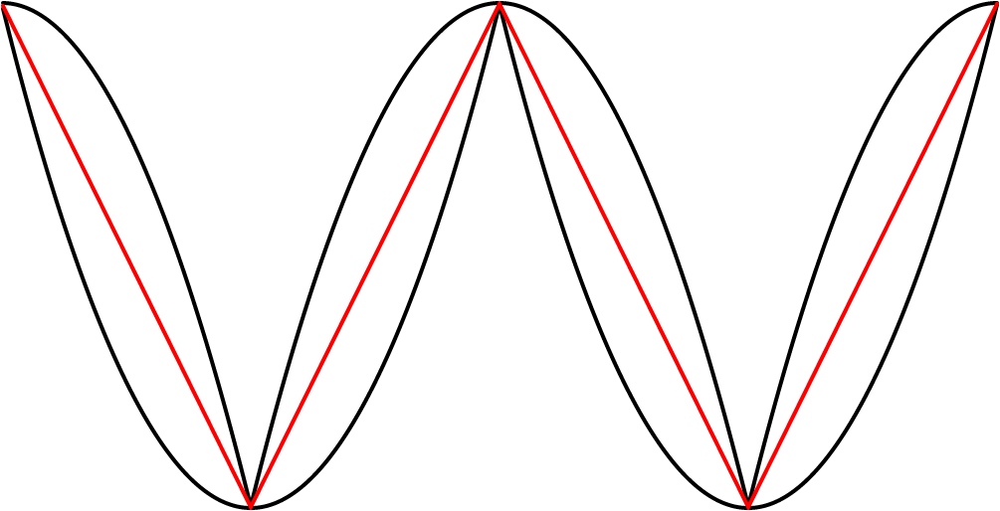

Songs of Parabolæ
 aking connections between mathematical and artistic ideas is a major source of joy for me, and consequently I’m always on the lookout for interesting experiments that I can conduct to get more familiar with different areas of mathematics in ways that feel free and creative. A few weeks ago, I watched a YouTube video by physics and mathematics educator Toby Hendy in which she explains how to draw a parabola using a metaphor inspired by Bob Ross, the late host of The Joy of Painting.
aking connections between mathematical and artistic ideas is a major source of joy for me, and consequently I’m always on the lookout for interesting experiments that I can conduct to get more familiar with different areas of mathematics in ways that feel free and creative. A few weeks ago, I watched a YouTube video by physics and mathematics educator Toby Hendy in which she explains how to draw a parabola using a metaphor inspired by Bob Ross, the late host of The Joy of Painting.
In Hendy’s metaphor, we paint a landscape that contains a horizon, a mountain, and a mushroom situated near the top of the mountain.

Hendy explains that it’s possible for us to define the contour of the mountain while only knowing the position of the mushroom and the horizon. She proceeds to draw a set of lines projected downward from the horizon, and another set of lines projected from the mushroom at various angles. A parabola then appears at the points where those two sets of lines meet.

When I saw the parabola appear, I couldn’t quite understand what was happening exactly, so I decided to recreate this experiment in code using p5.js. Here is what I obtained: You can find the code for this animation in the p5.js web editor here.

In this animation, we see that it’s possible to construct an isosceles triangle whose first vertex is situated on the horizon, whose second vertex is situated on the mushroom, This point that Hendy makes us imagine as a mushroom is called the focus of the parabola. Wikipedia describes a parabola as “the locus of points in [the] plane that are equidistant from both the directrix and the focus.” The directrix is the horizon in our metaphor. We can thus see that the present exercise makes us replicate this definition very precisely. and whose third vertex traces a parabola. I also cut the isosceles triangle into two right triangles—I feel like this cut clarifies the symmetry that is present in the isosceles triangle and which is so important here.

To build this ABC triangle, we must first project a vertical line c downward from the vertex A and another line a between the vertices A and B. We must then calculate the angle A and project a line b from the vertex B to form an angle equal to A (so that ABC is isosceles). Edges b and c of the triangle must then meet at vertex C. When this process is repeated starting from several different points on the horizon, the vertex C of each triangle always falls on the path of the parabola.
Onward to the realm of sounds
One of the first things that came to my mind after I drew a single parabola was that I could now create endless copies of it and turn them into a signal, a parabolic wave.

I got really curious about how this would sound. I first imagined that it would sound something halfway between a sine wave and a triangle wave, because it visually seems to have characteristics of both: a smooth curve and a sharp corner. The parabolic wave also looks very similar to the absolute value of a sine wave, but it is a little bit different, as shown here. This intuition turned out to be wrong.
Below you can listen to a sound file containing three notes: an A at 220 Hz played with a sine wave, then a parabolic wave, and then a triangle wave. You’ll hear that the parabolic wave in the middle doesn’t sound at all like it is halfway between the sine wave and the triangle wave.

These three notes were generated with simple code written in SuperCollider. Below is the SuperCollider code I wrote to get the parabolic wave. You don’t need to understand this code to understand what it is doing. It’s very simple: it defines an x value that linearly ramps between -1 and 1, and then a y value that is equal to x squared, which is the simplest way to express a parabola: y=x2.
(
{
var x, y, f = 1;
x = Phaser.ar(f * 0.5, 0) - 0.5 * 2;
y = x * x - 0.5 * 2;
}.plot(2);
)In the mysterious presence of a hidden triangle wave
After hearing the sound of the parabolic wave, I searched the internet to see if I could find any information about it. I found a section of an online book by Miller Puckette (the creator of Pure Data and Max/Msp) where he talks about parabolic waveforms. Puckette uses an equation to calculate the parabolic waveform over a period from 0 to N which is formulated differently than my own SuperCollider solution, but which gives similar results: p[n]=12(nN−12)2−124 Here, we can think of nN as the x component: it is a linear ramp between 0 and 1 (in other words, a sawtooth wave), which is then squared after having been remapped between −12 and 12. Notably, Puckette does not set his parabolic wave to be visually centered on the vertical axis, like I did. He explains that that he designed it thusly so that “the DC component is zero (or in other words, the average value over one cycle of the waveform is zero)”. This makes a lot of sense (it prevents DC bias) and I definitely did not think of this when I wrote my own parabolic wave.
One thing from Puckette’s book that I found absolutely fascinating was that the midpoint between two parabolic waves of inverted signs and inverted phase is a triangle wave. He visualizes this in his book, but I felt that an animated visualization would help me to understand it more satisfyingly. So I made another p5.js sketch.

The animation above features two black paths which are two parabolic waves of inverted signs and inverted phase, and a red path situated between them. The fascinating thing here is that the red path is always exactly halfway between the two black paths, on the vertical axis. This seems visually counterintuitive to me, and so I added a vertical axis that moves along the paths to show the phenomenon more clearly. We can see that the two vertical lines that stretch upward and downward from the red dot are always of equal lengths.
I was surprised and curious enough about this phenomenon to create another version of the animation, where the whole system can be said to be stabilized on the red path, meaning that the red path was transformed to a straight line by dividing all of its values by themselves, and then the two black paths went through the same transformation—they were also divided by the original value of the red path. To make the transformation very clear, here is an animation where we interpolate smoothly between both states of the system.
And below is the system once the transformation is fully applied—once it is stabilized on the red path.

It’s interesting to see that now that the two black paths went through the same transformation, they are now perfectly symmetrical. Also, the two black paths now resemble a lemniscate, but I’m not sure if it fits the precise definition.Does that imply that they were already symmetrical in some sense before the transformation, but that the symmetry was not yet apparent? In any case, it it now very obvious that the two black paths are always equidistant to the red path.
Yet another waveform
hen i saw the “stabilized” system, I noticed that it could be visually interpreted in two different ways: there are either two black curves each on one side of the red line, or there are two black curves that both cross the red line in the horizontal middle. These two crossing black curves each form a wave that somewhat resembles a slightly “tilted” sine wave. I got curious about hearing this wave. I obtained it in SuperCollider by multiplying the values of the black curve on top with the values of a square wave. Below, you can see that the value of the square wave b is either −1 or 1, so it just mirrors half of the black curve a.

We can then make copies of this a⋅b wave and we end up with the “tilted” sine wave.


As we can hear, and as we could expect from its appearance, this new waveform is much closer to a good old sine wave than the parabolic wave. Below is the SuperCollider code with which I got this wave. All it does is what I explained above visually.
(
{
var x1, x2, y1, y2, y3, ph, f = 1;
x1 = Phaser.ar(f * 0.5, 0) - 0.5 * 2;
y1 = x1 * x1 - 0.5 * 2;
x2 = Phaser.ar(f * 0.25, 1) - 0.5 * 2;
y2 = x2 * x2 - 0.5 * -2;
y3 = y1 + (0.5 * (y2 - y1));
ph = Phaser.ar(f * 0.5, 0).round -1 * 2 + 1;
y2 * y3 * ph - ph;
}.plot(2);
)Conclusion
This first foray into parabolæ leaves me curious to find out more about this curve through future explorations. Parabolæ certainly possess many more interesting features worth investigating. For example, this fascinating animation by Matt Henderson shows how a parabola preserves its shape perfectly when it is sheared.
In the meantime, I hope you enjoyed following this meandering path among some ideas inspired by the beautiful and humble expression y=x2.